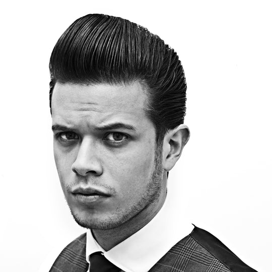

Construction worker, turned barber, gets tools upgrade.
JOSEPH Dante may just make his career change permanent.
The construction worked turned barber got his tools an upgrade through to a donation from top barbershop chain Bruno's Barbers on Tuesday.
“Masaya ako ngayon kasi nakumpleto yung gamit ko kahit papano. Kasi sa tagal kong naggugupit rito, hindi ko talaga mabili yung mga gamit,” Dante said.
Bruno's Barbers president Marco Pascual, days after finding out about Dante's situation, gifted him a kit containing clippers, two sets of scissors, a razor, and a comb, along with a face shield.
“Kahit hindi siya parte ng kumpanya namin, gusto rin namin siyang tulungan to help him with his guidelines, yung mga hygiene, and sanitation protocol para kahit siya mismo, maangat din niya ang profession niya.”
“I think yun naman ang kailangan natin gawin ngayon sa mga panahon na ganito, magtulong-tulungan din tayo. Kung kaya nating tumulong, tulong din tayo,” he added.
Dante tried out his new tools, giving a haircut along Mabini st. near the corner of Kalaw ave. in Manila.
“Naninibago ako. Yung gunting, madulas masyado, parang dumudulas sa kamay ko,” he chuckled. “Medyo mabigat. Mas maganda rin po yung ngayon, lalo na kung masanay na ako.”
Will this mean an increase in haircut price?
“Hindi pa rin po. Bahala na lang po sila kung dadagdagan nila,” he concluded with a smile.
Water-Soluble vs. Oil-Based Pomade
 Pomade is a classic hairstyling product that's been around for almost two centuries. Traditional oil-based pomade was the bear fat-filled stuff that kept 19th-century men's hair sleek enough to see your reflection in. However, the modern versions of traditional pomades have afforded the modern man far more options when it comes to the reflective nature of their hair.
Pomade is a classic hairstyling product that's been around for almost two centuries. Traditional oil-based pomade was the bear fat-filled stuff that kept 19th-century men's hair sleek enough to see your reflection in. However, the modern versions of traditional pomades have afforded the modern man far more options when it comes to the reflective nature of their hair.
Today, there are different types of pomade to fit every hairstyle. True to its name, water-based pomade mainly consists of water and has a more gel-like consistency. It offers high hold and will dry and maintain your chosen hairstyle all day long. Water-based pomade is also the easiest to remove while washing your hair; all you need to do is rinse it out with water.
On the other hand, oil-based pomade has a waxy consistency and provides your hair with high shine and anything from medium to strong hold. Unlike the oil-based pomades of old, modern oil-based pomades are more mineral oil than bear fat, and their complex formulations mean they're not just easier to wash out, they let you restyle your hair easily throughout the day.
Whether you're looking for a water-based or oil-based pomade, Reuzel offers a product for every taste, from gravity-defying hold to mirror-worthy shine. To explore the options available, check out Reuzel's extensive pomade collection.
The Long Trim Pompadour

Know it:
The Elvis classic. Your granddad likely wore it to a sockhop. And then he punched a jock in the face and took off with his girl. Granddad was a badass.
Get it:
Tell your stylist you want a traditional pomp, without any clear separation or undercut. If they ask what clipper guard you want, tell them to get their shears out instead. You'll want as much as a couple inches length on your sides.
Build it:
1. Apply a palm full of Reuzel Grooming Tonic to clean, thoroughly towel dried hair to thicken it up and get it smelling good.
2. With a 7-9 row Denman type brush in one hand and a blow dryer in the other, direct your sides back and your bangs up and over your crown.
3. When everything's completely dry, get out a tin of Reuzel Extreme Hold Matte Pomade. Emulsify it good and hard in your palms. And then smear it evenly back
through your hair.
4. Use a wide-tooth comb to get everything smartened up, and a pick to tug up the front for more volume.
5. If extra shine is desired - and we'd say extra shine is always desired - use your palms to apply a smidge more Reuzel Grooming Tonic over the surface of the hair.
Tags: Style Modern